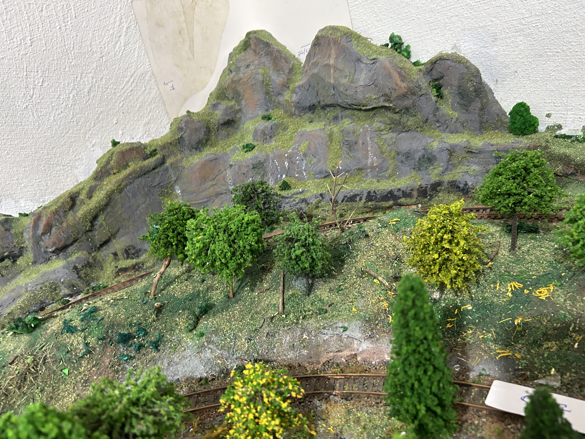

Como fazer um relevo bem realista
Um relevo convincente pode ser construído com materiais simples e em várias camadas. O segredo está em evitar formas muito regulares e combinar diferentes texturas até obter uma superfície com aparência natural.

Como fazer
- Formar o relevo com placas de isopor ou Depron fino, sobrepostas conforme a técnica das curvas de nível.
- Depois de definir o formato básico, aparar e arredondar as bordas das placas para eliminar o aspecto de degraus. Fazer também cortes e rasgos irregulares para criar depressões, saliências e pequenas erosões.
- Cobrir o conjunto com camadas de faixa gessada previamente molhada em uma mistura de água com rejunte marrom. Modelar a superfície enquanto estiver úmida e deixar secar completamente.
- Aplicar pedaços de papel-toalha embebidos em uma mistura de água, tinta marrom — ou rejunte marrom — e cola branca. Distribuir o material de maneira irregular sobre o terreno e aguardar a secagem.
- Fazer os últimos acertos do relevo com uma mistura de gesso, tinta marrom — ou rejunte marrom — e areia fina. Aproveitar esta etapa para criar pequenas irregularidades e suavizar as transições. Deixar secar completamente.
- Finalizar com árvores, tufos de capim, arbustos, pequenas flores e outros elementos adequados ao cenário.
Uma dica
Caso ainda não se conheça a técnica de construção de relevo por curvas de nível, pode-se pedir ao ChatGPT uma explicação passo a passo e adaptá-la às dimensões e ao formato do cenário.